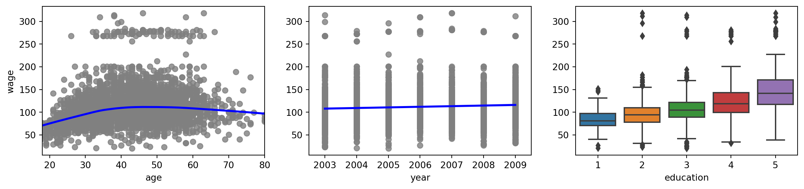
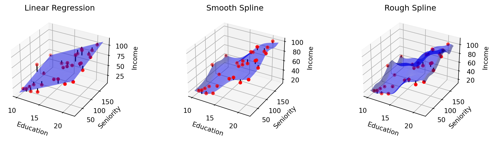
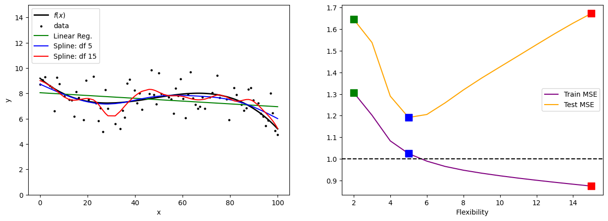
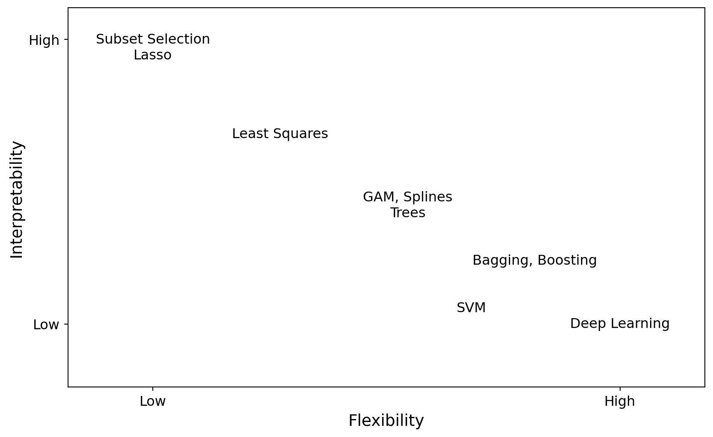

Introduction to Statistical Learning
Intro to Statistical Learning - Class 1
Giora Simchoni
gsimchoni@gmail.com and add #intro2sl in subject
Stat. and OR Department, TAU
What is Statistical Learning?
What is Statistical Learning?
- Statistical learning is the task of understanding data, and making predictions based on data
- It is a sub-domain of machine learning
- It uses statistics to build models that approximate the data
- There is a diverse set of tools for this task, where different problems calls for different tools
- We will focus on the statistical aspect of the task, and rarely mention computational aspects
Key Concepts
- The data is a set of features (covariates/ independent variables/ predictors):
- Continuous
- Ordered categorical (discrete)
- Unordered categorical
- Using them we construct a model (learner) of the data
- Usually we use the model to predict a goal:
- When the goal is continuous the model is a regression model
- When the goal is categorical the model is a classification model (classifier)
Question: Can one use regression for classification and vice versa? We will get back to it later.
Supervised and Unsupervised Learning
Supervised Learning
- Definition:
- Input: Let \(x\) be a vector of length \(p\), and let \(y = f(x) + \varepsilon\), where \(E(\varepsilon) = 0\), \(Var(\varepsilon) = \sigma^2\), \((\varepsilon, x)\) are independent
- Goal: learn \(f\) given a set of inputs \((\mathbf{X}, \mathbf{y})\)
- In most cases we can only find a function \(\hat{f} \approx f\), an estimator
- The approximation is measured relative to some loss function \(L(y, \hat{y})\)
- Regression example: MSE (This will be our common choice), MAE
- Classification example: misclassification rate, recall and precision
Comments on noise
- If \(y\) is the number of snacks in a bag: “noise” is intuitive, sometimes 101 snacks, sometimes 99
- But what if \(y\) is salary? Same job, same experience, same gender, same company – same salary?
- Noise is everything we’re not taking into account
- And it absolutely can be dependent on \(x\) e.g. \(Var(\varepsilon|x) = \sigma^2(x)\)
Supervised Learning: examples
- Goal: Predict the total sales of a product in a given day
- Covariates: price, geographical region, day of week, holiday, …
- Goal: Predict if a client of a cellular company will churn
- Covariates: usage, age, socio-economical status, phone type, …
- Goal: Personalized medicine (e.g. what is the effective medicine dosage for a specific patient)
- Covariates: genes profile, effectiveness on cell tissues, …
- Drug cost is a part of the loss function \(L\)!
Supervised Learning: wage prediction
Unsupervised Learning
What if there is no \(y\)?
- Given set of features \(x\) find a model that describes properties of the data:
- Clusters
- Dependencies
- Correlations
- Common factors (PCA)
- Problems in which we model the covariates data are called unsupervised
- Most of the course: we will focus on supervised learning
Semi-supervised: there exists a goal but it is partially labeled
Parametric and Non-Parametric Models
Why estimate \(f\)?
- For prediction: Given a new instance vector \(x\), predict: \(\hat{y} = \hat{f}(x)\)
- This seems like a reasonable choice since the noise is zero-mean
- For inference: Suppose that we learned an estimator \(\hat{f}\), we can use it to learn properties of the input, such as:
- Which variables of \(x\) affects \(y\)?
- Given a subset of variables \(X^{'} \subset X\), is a variable \(X^{''} \not\subset X^{'}\) informative for \(f(y | X')\)?
- How well can we approximate \(y\)?
The Estimation Problem
How do we learn \(\hat{f}\)?
- Let \(T = \{(x_1, y_1) \dots (x_n, y_n)\}\) be a training sample of size \(n\)
- Note that \(x_i = \begin{pmatrix}x_{i1} \\ \vdots \\ x_{ip}\end{pmatrix}\) is a vector of \(p\) features (by notation a column vector)
- We assume that there exists a joint distribution \(X \times Y\), and that \((x_i, y_i)\) is sampled from it
- Usually we assume that the samples are iid
- In general most learning methods can be divided into parametric methods and non-parametric methods
Parametric Models
- To learn a parametric model we first assume a known parametric form for \(f(x)\), and then learn the parameters of \(f\)
- Example:
- Assume \(f(x) = \beta_0 + \beta_1 x_1 + \dots + \beta_p x_p\), namely \(f\) is a linear function of the inputs with unknown fixed coefficients
- Estimate the values of \(\beta = \beta_0, \dots, \beta_p\)
- How? For example using least squares (OLS): \(\min_\beta \sum_i {(y_i - \beta^{T}x_i)^2}\)
Non-Parametric Models
- Don’t assume the form of \(f(x)\), the model just wants \(f(x)\) to be close to the data
- Under the assumption that \(f(x)\) belongs to a wide family of smooth functions
- Example:
- Splines – smooth piecewise polynomials.
- Why do we need the smoothness for?
- If we remove the smoothness assumption then what is the best \(f(x)\)? Is it a good choice?
From Linear Regression to Splines

The rough spline seems to be overfitting the data.
Overfitting
Train and Test
- The goal of a model is its predictive power, namely how well will it fit on a new/unseen/out-of-sample set of observations.
- The new set of observations is called test set (as opposed to the train set).
- Usually:
- Dividing the data to a train and test sets
- Learn models on train set, select models based on their performance on the test set
Prediction Error: first decomposition
- Assume an observation \((x, y)\), \(\hat{y} = \hat{f}(x)\) is given, \(L(y, \hat{y})\) is the MSE
- What is the expected loss?
\(E_y[(y - \hat{f}(x))^2] = E_\varepsilon[(f(x) + \varepsilon - \hat{f}(x))^2] = ?\)
\(\left(=\int_\varepsilon (f(x) + \varepsilon - \hat{f}(x))^2 h(\varepsilon)d\varepsilon \stackrel{\text{e.g.}}{=}\int_{-\infty}^{+\infty} (f(x) + \varepsilon - \hat{f}(x))^2 \frac{1}{\sigma\sqrt{2\pi}} \exp\left( -\frac{\varepsilon^2}{2\sigma^2}\right) d\varepsilon\right)\)
\(= [f(x) - \hat{f}(x)]^2 + Var(\varepsilon)\)
- First term: reducible error
- Second term: irreducible error
Prediction Error: first decomposition
\(E_y[(y - \hat{f}(x))^2] = [f(x) - \hat{f}(x)]^2 + Var(\varepsilon)\) = reducible error + irreducible error
Two comments:
- Which part should we minimize?
- For squared error: “best” estimator for \(\hat{f}\) is \(f(x) = E(y|x)\)!
A taste of overfitting
- But given an observation \((x, y, \hat{y}(x))\), we never know which part of its error is irreducible!
- Informally, being too close to the data is called overfitting
- So the best prediction for a given \(x\) is not necessarily \(y\)!
- Overfitting may get worse for non-parametric models (highly flexible)
Overfitting with Splines
Why do we prefer simple models?
- The simpler the more interpretable (try to explain Splines)
- Simpler for inference
- Reduces overfitting
- But may increase underfitting
- So: It all depends on your goal!
Why do we prefer simple models?

What if noise is dependent on \(x\)?
\(E_{y,x}[(y - \hat{f}(x))^2] = E_{\varepsilon,x}[(f(x) + \varepsilon(x) - \hat{f}(x))^2] = ?\)
\(= \int_{x,\varepsilon} [f(x) + \varepsilon(x) - \hat{f}(x)]^2 g(x, \varepsilon) d(x, \varepsilon)\)
\(= \int_x \int_{\varepsilon|x} [f(x) + \varepsilon(x) - \hat{f}(x)]^2 h(\varepsilon|x) d(\varepsilon|x) k(x) dx\)
\(= \int_x \left[[f(x) - \hat{f}(x)]^2 + 2\int_{\varepsilon|x} \varepsilon(x)[f(x) - \hat{f}(x)]h(\varepsilon|x)d(\varepsilon|x) + \int_{\varepsilon|x} \varepsilon(x)^2 h(\varepsilon|x)d(\varepsilon|x)\right]k(x)dx\)
\(=\int_x [f(x) - \hat{f}(x)]^2k(x)dx + \int_x \sigma^2(x)k(x)dx\)
\(=\mathcal{C}>0 + \sigma^2\)